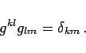

Inhalt Index DeskTop Bronstein

 Lineare Algebra Tensoren Tensoren in krummlinigen Koordinatensystemen
Lineare Algebra Tensoren Tensoren in krummlinigen Koordinatensystemen


Um die EINSTEINsche Summenkonvention anwenden zu können, beschreibt man die kovarianten bzw. kontravarianten Basisvektoren durch
| (4.85) |
Die Darstellung eines Vektors  lautet dann
lautet dann
| (4.86) |
Die Komponenten Vk werden als kontravariante Koordinaten, die Komponenten Vk als kovariante Koordinaten des Vektors  bezeichnet. Zwischen diesen Koordinaten besteht der Zusammenhang
bezeichnet. Zwischen diesen Koordinaten besteht der Zusammenhang
| (4.87a) |
mit
Weiterhin gilt mit dem KRONECKER-Symbol
| (4.88a) |
und daraus folgt
|  | (4.88b) |
Den Übergang von Vk zu Vk bzw. von Vk zu Vk gemäß (4.87b) beschreibt man als Heraufziehen bzw. Herunterziehen des Index durch Überschiebung.
Hinweis: In kartesischen Koordinatensystemen sind kovariante und kontravariante Koordinaten einander gleich.